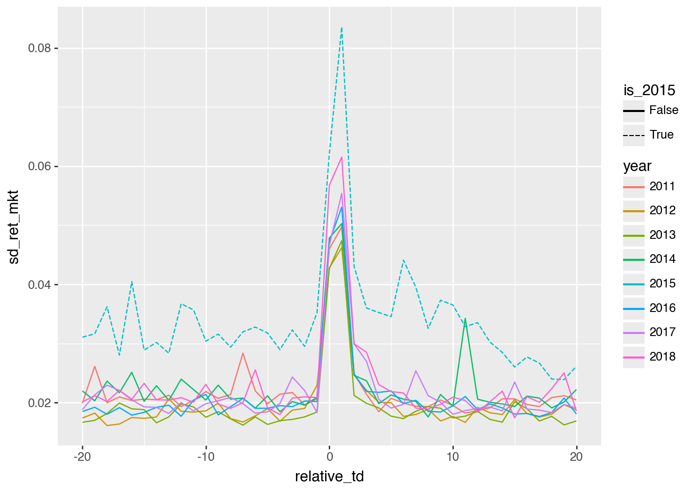
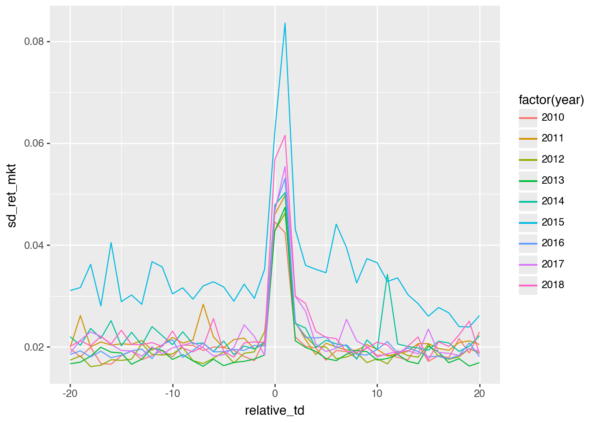
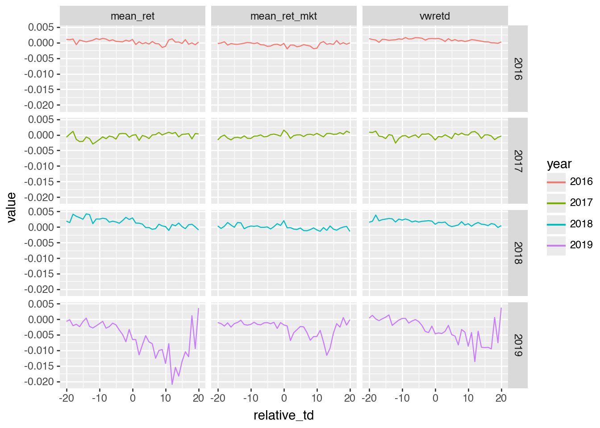

import polars as pl
from plotnine import ggplotMaking plotnine more ‘Pythonic’
Abstract
The note addresses the claim that the plotnine plotting library for Python is “not Pythonic”. Here I propose a minor tweak to plotnine that provides a more method-oriented interface, while preserving the core grammar-of-graphics approach.
Background on plotting in Python
The oldest and still most foundational plotting library in Python is matplotlib, which emerged in the early 2000s with an explicit goal of giving Python something like the plotting capabilities of MATLAB. Not only is it widely used directly, it also provides the base layer for other leading Python plotting packages. It is flexible and widely supported, but its flexibility comes with costs: matplotlib can feel fairly low-level, and users often need to think carefully about lots of details include figure objects, axes, styling, and annotation details.
Seaborn is newer and was developed later as a higher-level interface oriented toward statistical graphics. It aims to make common plots easier to produce and better looking by default, especially when working with data frames. In practice, Seaborn sits comfortably on top of matplotlib: it simplifies many standard workflows without replacing the underlying plotting engine.
It seems plotnine occupies a bit of a niche in the Python data science ecosystem. It brings to Python the grammar-of-graphics approach of Wilkinson (2005) that was popularized by R’s ggplot2 in R. Rather than building figures by directly manipulating axes, one specifies mappings from variables to aesthetics and then adds geometric layers, scales, facets, and themes. Because of plotnine, users of ggplot2 can quickly feel at home in Python, and for pedagogical purposes it helps to separate the structure of a graphic from the mechanics of drawing it.1
“But plotnine isn’t Pythonic.”
An apparent critique of plotnine is that it is “not Pythonic” in some way. Because it seems difficult to find a clear statement of this criticism, so I need to speculate a bit about what is meant by “Pythonic” in this context. The following are some ideas:
matplotlib defines Pythonic
One view might be that matplotlib, as the established standard, defines “Pythonic” when it comes to plotting. But I think this argument (if made) would fail in multiple ways.
When people say something is Pythonic, they typically mean a few things. The Zen of Python advocates for clear, readable, and explicit code. In this regard, matplotlib often falls short.
Apart from having two commonly used APIs (one very un-Pythonic), matplotlib often seems difficult to understand and verbose compared to code you might use with ggplot2, the popular R plotting package. For example, my experience is that some plots from the Python Data Science Handbook have been “broken” by API changes since publication of the second edition in 2023.2 But even with the eager assistance of Codex, I wasn’t able to get some of these to look as they did in the book. From this experience, I learnt that the documentation for matplotlib is incredibly extensive and detailed, but is poring through documentation Pythonic? I think not.
Seaborn is intended to provide a higher-level interface to matplotlib, but my sense is that one often needs to interact with matplotlib in practice even when using Seaborn. I’m still working my way up the learning curve with Seaborn, so I am not in a position to make any kind case that it is or is not “Pythonic”. So I will assume that it is and evaluate some other potential claims against plotnite.
plotnine overrides the + operator!
The plotnine website includes a section devoted to the question: “Is overloading operators ‘Pythonic’?” There it is suggested that “sometimes people ask whether overloading the + and >> operators is ‘Pythonic’”.
I think the idea that overriding + and >> is not Pythonic is pretty silly. Many examples of “overriding” (I think a better word would be implementing) + exist. Think lists or strings. Also, that’s the whole idea of having methods like .__add__() (for +) and .__rrshift__() (used by plotnine for >>) in the first place. This seems very Pythonic!
plotnine is un-Pythonic because it’s different
I think the reality is that different packages in Python will do things in different ways for good reasons and one way is not necessarily more Pythonic than another.
The move in pandas 3 to a “copy-on-write” model might be viewed as un-Pythonic, given that NumPy slices are typically views on the underlying array. But that argument relies on treating consistency with existing libraries as the definition of Pythonic.
In practice, what makes sense for arrays does not necessarily make sense for data frames. Copy-on-write trades some performance characteristics for clearer and safer semantics, which may be more appropriate for tabular data.
Similarly, Polars largely dispenses with the pandas-style index. One could argue that this is un-Pythonic because pandas treats the index as central to its data model and pandas is the most “Python” data frame library around. But that again reduces “Pythonic” to “consistent with the most popular existing package [pandas].”
In practice, Polars adopts a different model of tabular data—one that prioritizes explicit columns and query-style transformations over index-based alignment. That choice may be better suited to its goals, particularly around performance and composability. This doesn’t seem language-specific.
plotnine ports a library from R
I don’t think that this, in itself, is any kind of argument at all. Where did matplotlib come from, if not MATLAB? Some of the implementation of matplotlib was heavily influenced by Java.
Coming from R cannot, by itself, be evidence that something is un-Pythonic. Where did that DataFrame idea, which put pandas at the centre of the Python data science ecosystem, come from again?
Using from plotnine import * is un-Pythonic
Here is where I think there is more of a case. In R, one thinks little of saying library(ggplot2), which would translate as from ggplot2 import *. I suspect that the decision was made to implement plotnine using a functional approach was driven by the idea of making a transition from R’s ggplot2 to Python’s plotnine as straightforward as possible. For a user of ggplot2, one can pretty much just copy-paste R code into Python and it magically works.3
An unfortunate downside of this is that plotnine can feel like a definite interloper. Perhaps the “Plan 9 from Outer Space” allusion in the package’s name is a nod to this.
However, I think that one needs to understand that there’s nothing particularly “R” about ggplot2. One only has to consider the plotting functions in “base” R or the various packages that were popular at the time when ggplot2 first arrived to see this. I think that ggplot2 is perceived as “Plan 9 from R” in part because it is so dominant in the R ecosystem. But it’s not because it’s whatever-the-R-equivalent-of-Pythonic-is, or because corporate IT departments pushed it down the throats of users (Windows/Office-style) but because it scratched an itch and people liked it.
The reality is that ggplot2 is based on Wilkinson (2005), a language-agnostic, conceptual framework for building statistical graphics.
All that said, when using plotnine, one either uses from plotnine import * or carefully imports each function one uses in a particular file, and there can be many. Using the latter approach does not feel particularly ergonomic. And using the former approach feels a bit like showing up to my (Korean) mother-in-law’s house and insisting on wearing my shoes inside.4 One could argue that little harm would occur from doing so, but it feels just plain rude and not respecting local customs.
But if you use plotnine, you can’t help but feel that it’s almost Pythonic. Those functions almost feel like methods on some kind of object. How could I test this idea?
Implementing plotnine using methods
One approach to seeing just how easy it would be to implement plotnine functions as methods is, as one does nowadays, to ask Codex (or equivalent).
I gave Codex the following prompt:
OK. So the standard way to use this package is pretty much
from plotnine import *. Would it be possible to make a version of this package that was more method-oriented. Basicallyfrom plotnine import ggplotand thenggplot(aes(...)).geom_line()and so on?
Codex suggested it was very feasible. So I forked the plotnine package and had it get to work.
In a few minutes, Codex came back with an implementation that comprised:
- two lines of additional code in
plotnine.py. - an additional module
_fluent.pyconsisting of 72 lines of code - about 50 lines of code added to
test_ggplot_internals.py.
One of the tweaks it made to my request was the implementation of an .aes() method. Another was a choice to leave some things as they are (e.g., element_text() is still a function that would need to be imported). Finally, to avoid clashes between methods and attributes, Codex gave me things like .add_theme() instead of .theme().
These changes can be found on the codex-fluent-api branch on my GitHub fork. Below I take this version for a spin by putting "plotnine @ git+https://github.com/iangow/plotnine.git@codex-fluent-api" in my pyproject.toml. Because (it seems) plotnine is pure Python, it’s pretty easy to install.
The code to create this note, including the data, can be found here.
A quick test drive
I have a “solutions manual” for one chapter of the Python Polars version of Empirical Research in Accounting: Tools and Methods. Because this solutions manual chapter has a bunch of plots (originally created using ggplot2) and I was looking at it recently, it seemed to provide a good case study for the alternative version of plotnine.
I will use polars, but you can see that here I just need from plotnine import ggplot (very Pythonic, no?).
earn_annc_summ = pl.scan_parquet("earn_annc_summ.parquet")The plots below are just what I had to hand. Note that most of the plots just differ in terms of the data fed into them. Here is where >> is nice. I don’t need to create plot_data data frames, I just figure out the data I want for each case in terms of a method chain (or “pipeline”) and feed it to plotnine. Note that plotnine has no trouble accepting Polars DataFrame objects (despite what Codex and Claude Code sometimes think).
I believe I could also import aes() and use the function form (and I think perhaps I would need to in some cases), but here I just go with the .aes() flow and everything works.
Most of the plots just use .geom_line(). But in Figure 6, you can see that it works for .geom_col() and .facet_grid().
My original note had other variations, but these required more extensive data, so I omitted them here. Perhaps a natural next step would be to try some more examples from the [extensive] plotnine gallery.
(
earn_annc_summ
.filter((pl.col("year") > 2010) & (pl.col("year") < 2019))
.with_columns(
pl.col("year").cast(pl.Int64).cast(pl.String),
(pl.col("year") == 2015).alias("is_2015"),
)
.collect()
>>
ggplot()
.aes(
x="relative_td",
y="sd_ret_mkt",
group="year",
colour="year",
linetype="is_2015",
)
.geom_line()
)
(
earn_annc_summ
.filter((pl.col("year") > 2010) & (pl.col("year") < 2019))
.with_columns(pl.col("year").cast(pl.Int64).cast(pl.String))
.collect()
>>
ggplot()
.aes(
x="relative_td",
y="mean_rel_vol",
group="year",
color="year",
)
.geom_line()
)
(
earn_annc_summ
.filter(pl.col("year").is_between(2010, 2019, closed="left"))
.collect()
>>
ggplot()
.aes(x = "relative_td", y = "sd_ret_mkt",
group = "year", colour = "factor(year)")
.geom_line()
)
(
earn_annc_summ
.filter(pl.col("year").is_between(2010, 2019, closed="both"))
.collect()
>>
ggplot()
.aes(x = "relative_td", y = "sd_ret_mkt",
group = "year", colour = "factor(year)")
.geom_line()
)
(
earn_annc_summ
.filter((pl.col("year") > 2010) & (pl.col("year") < 2019))
.with_columns(pl.col("year").cast(pl.Int64).cast(pl.String))
.collect()
>>
ggplot()
.aes(x = "relative_td", y = "mad_ret_mkt",
group = "year", colour = "factor(year)")
.geom_line()
)
mad_ret_mkt
(
earn_annc_summ
.filter(pl.col("year") >= 2016)
.with_columns(pl.col("year").cast(pl.Int64).cast(pl.String))
.collect()
>>
ggplot()
.aes(x="relative_td", y="obs", fill="year")
.geom_col()
.facet_grid("year ~ .")
)
relative_td and year
(
earn_annc_summ
.filter(pl.col("year") >= 2016)
.select("year", "relative_td", "mean_ret", "mean_ret_mkt")
.with_columns(
(pl.col("mean_ret") - pl.col("mean_ret_mkt")).alias("vwretd"),
pl.col("year").cast(pl.Int64).cast(pl.String),
)
.unpivot(
on=["mean_ret", "mean_ret_mkt", "vwretd"],
index=["year", "relative_td"],
variable_name="measure",
value_name="value",
)
.collect()
>>
ggplot()
.aes(x="relative_td", y="value", color="year")
.geom_line()
.facet_grid("year ~ measure")
)
References
Wilkinson, Leland. 2005. The Grammar of Graphics. 2nd ed. Springer.
Footnotes
I have also appreciated its willingness to work with Polars data frames.↩︎
An excellent book, by the way.↩︎
There are some tweaks that need to be made, but nothing that any LLM can’t handle easily.↩︎
Frank Costanza has similar issues in the The Understudy.↩︎